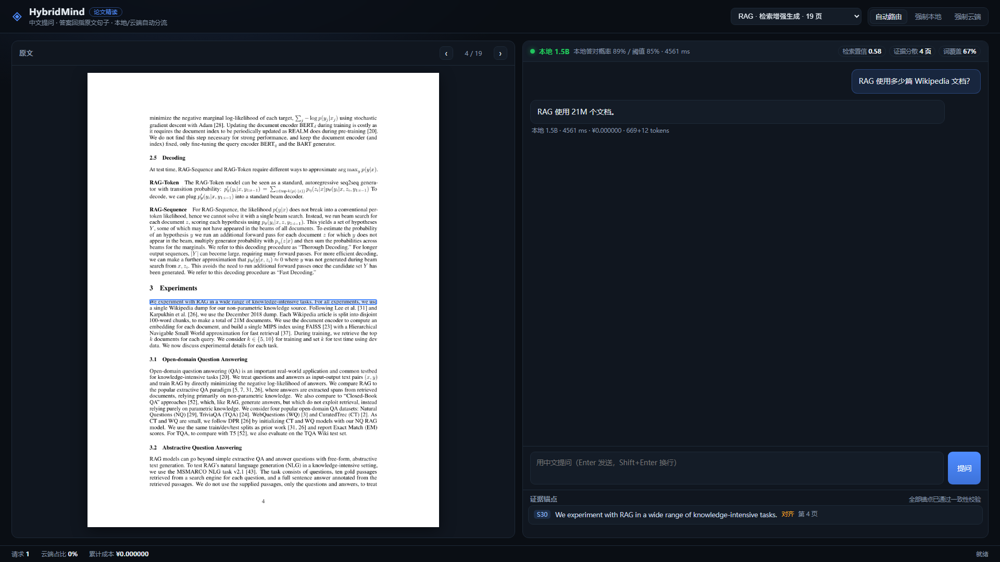

系统由五层组成：解析、检索、路由、生成、锚点。其中路由与生成沿用了本作品前一版本的端云协同框架（后端抽象、降级、账本一行未改），新增的是解析、检索与锚点三层——它们负责回答"凭什么这么答"。
一个刻意的取舍是：旧的算术问答入口（/api/chat）完全保留，新场景走独立入口（/api/paper/*）。这样两套评测可以并列做对照，旧入口的行为也不会因为新功能而漂移——22 项旧单元测试至今全绿，是这条边界最直接的证据。
解析层的目标不是"把 PDF 转成文本"，而是把文本转成还能回到原位的片段。实现要点有三：
（1）块级坐标。用 page.get_text("dict") 取每个 block 的文字与 bbox，再按行拆分。每个片段保存行级坐标数组，前端才能把高亮框收紧到命中的那几行，而不是框住半页。
（2）页内断开。跨页的片段无法用一个矩形表示，因此分块时遇到换页强制断开；片段长度目标 300–500 字（实测均值 437 字）。
（3）去页眉页脚与参考文献。arXiv PDF 每页都有侧栏与页脚，出现频次超过半数页面的短行会被剔除；遇到 "References" 章节直接截断——参考文献里全是作者名，会被检索当成高相关片段。
三篇论文（63 页）解析后得到 328 个片段，平均每页 5.2 个。
检索使用 BM25（k1 = 1.5，b = 0.75），索引侧与查询侧共用同一个分词器：英文按词切分并做轻量词干化（8 条后缀规则，避免引入 nltk），中文按字 bigram 切分。选 BM25 而不是稠密向量的原因是目标环境没有 GPU：一篇 20 页论文建向量索引需要数十秒，而 BM25 是毫秒级，且分数可以手算复核。
{片段}.zh.json），运行期中文问句命中译文，锚点仍回指英文原文的片段。三篇论文共 328 块，建库成本约 ¥0.34，运行期零额外调用。
检索结果同时产出 4 维特征供路由使用：top1_score（最相关片段的归一化分数）、score_gap（top1 与 top2 的差值）、n_pages_hit（命中片段跨了几页）、coverage（问题词在 top-k 中的覆盖率）。它们在 6.4 节被证明不足以预测本地答对与否——这个否定性结果直接导致了 4.5 节的方法转向。
本地与云端被抽象成同一个 Provider 协议（generate / stream），上层只认这个协议，因此换模型不需要改编排代码。本地后端支持三种形态：开发态的 Ollama、部署态的 llama.cpp OpenAI 兼容服务、以及进程内的 llama-cpp-python。三者对上层完全等价。
降级策略是：云端调用失败（网络、限流、密钥失效）时回退本地；云端密钥未配置时直接走本地。论文场景额外有一层：若本地答案未通过证据校验、而升级后又失败，则保留本地答案并在界面标注"未通过校验"，而不是返回一个空结果。
进程内维护一个账本，记录请求数、本地/云端分布、升级次数、提示与补全 token 数、累计成本与平均延迟。前端底栏实时显示，评测脚本也读同一份结构——保证"界面上看到的数字"与"文档里写的数字"来自同一个来源。
界面分三栏：左侧是原文页图（服务端按页渲染 PNG，避免引入 PDF.js），中间是问答与流式输出，右侧上方是路由决策、下方是证据锚点列表。点击答案里的引用角标（如 S30）或锚点条目，页面会跳到对应页并按坐标画出高亮框；坐标换算只用一个比例——页图显示宽度除以 PDF 页宽（单位 pt）。
刻意不做 PDF.js 在线渲染：页图 + 绝对定位框的工作量约为前者的三分之一，而演示所需的功能（翻页、跳转、高亮）完全覆盖。

界面还支持上传自己的 PDF：解析完立刻能用英文提问（BM25 直接命中英文原文）；若要中文提问，需要先点「建中文索引」——逐块翻译一篇 20 页论文约 1–2 分钟，按钮上会显示进度与花费。索引只建一次，之后与内置论文完全一样。
给定论文 D、问题 q，检索器返回片段集合 S = {s1, …, sk}，每个片段带有编号 id(s)、页码 p(s) 与行级坐标。生成模型 M 产出答案 a。锚点函数 A(a, S) 返回若干锚点，每个锚点包含片段编号、页码、引文与坐标。
校验函数给出三项布尔判定：引用是否存在、答案中的数字是否能在被引片段中找到、答案中的英文术语是否能在原文找到。门控规则为：
gate_pass(a) = (锚点数 > 0) ∧ 引用有效(a) ∧ 数字可溯(a)
门控通过则保留本地答案，否则把同一组片段交给云端重答并重新校验。注意术语可溯性有意不进入门控：中文作答时英文术语常被译成中文，把它作为硬条件会把正确答案误判为不通过（两者的差异见 6.3 节的消融）。
Prompt 要求模型"只依据给定片段作答、每个结论后用 [S编号] 标注出处、片段不足就只回答'原文未提及'"。三条约束的顺序很关键：先写"不足就说未提及"，再写"不超过 80 字"——顺序反过来时，模型为了简短会硬凑答案，拒答率显著下降。
实测中，云端模型基本会按要求标注编号；本地 1.5B 经常不标——它会把话说圆，但不写 [S]。这不是提示词能完全解决的：1.5B 的指令跟随能力不足以稳定维持格式约束。如果锚点层只能解析编号，那么本地答案将永远没有锚点、也就永远无法通过门控——整个"先在本地答"的设计会直接失效。这就是 4.3 节存在的理由。
当答案里没有可解析的引用编号时，用三类与语言无关的信号把答案句对齐到片段：
（1）数字：论文问答的主要答案形态就是数字，而数字在中英文里写法一致。"21M"在中文答案与英文原文中都是"21M"。每个命中的数字计 3 分。
（2）英文术语：答案里保留下来的 F1、BART、BM25 等专有名词可直接做词面匹配，每个命中计 1.5 分。
（3）译文重合度：建库期已有逐块中文译文，把答案句与译文都切成字 bigram，按重合比例计分（满分 2 分）。
三路加权后取最高分片段，阈值 1.2；同一片段只出一次锚点，最多 4 个。选定片段后，再在片段内部按"含命中数字/术语最多的句子"选出引文，并把高亮框收紧到这些行——只给块级 bbox 会让前端框住半页，演示效果很差。
三条规则全部是确定性的，不调用任何模型：
R1 引用有效性：答案中出现的每个 [S编号] 必须真的在检索结果里，否则记为无效引用。
R2 数字可溯性：答案中的数字（小数、百分数、两位数以上）必须能在被引片段或其译文中找到。判定前先剥掉 [S3] 这类编号——否则编号里的数字会被当成答案，造成假阴性。
R3 术语可溯性：答案中的英文术语（长度 ≥ 3）必须能在被引片段中找到。该条只做统计，不参与门控。
三条规则的价值在于它们可被逐条复算：给定答案与检索结果，任何人都能重现每一判定。这与本作品一贯的"不请大模型当裁判"一致。
门控路由的算法只有十行左右：
hits, feats ← 检索(q)
msgs ← 提示词(hits, q)
local ← 本地生成(msgs)
anchors ← 对齐(local, hits)
if gate_pass(local, anchors):
return 本地答案 + anchors # 云端调用 0 次
cloud ← 云端生成(msgs) # 仅在本地站不住时
return 云端答案 + 对齐(cloud, hits)
它与"预测难度再分流"的区别在于信号的可获得性：难度只能从题面猜，而"这个答案有没有原文背书"在本地答完之后是确定的。代价是本地必须先生成一次——在 CPU 上这意味着即使最终要上云，用户也要多等约 10 秒。这个代价是否值得，取决于本地答案的通过率：若通过率很低，等于每次都白跑一遍本地；6.3 节的实测通过率为 76.2%，因此这笔开销是划算的。
语料为 3 篇 arXiv 公开论文，共 63 页、328 个解析片段（清单与许可说明见仓库 data/papers/README.md）。三篇分别覆盖检索增强生成、参数高效微调与长上下文使用，恰好覆盖本系统的技术路线与动机。
评测集共 115 道中文题，每题标注标准答案、gold page 与来源片段：
| 题型 | 数量 | 示例 | 判分方式 |
|---|---|---|---|
| 数字定位 | 44 | RAG 使用多少篇 Wikipedia 文档？ | 数词是否出现 |
| 事实抽取 | 57 | BART 生成器用哪篇论文的模型？ | 别名包含匹配 |
| 不可答 | 14 | 这篇论文在 ImageNet 上的 Top-1 是多少？ | 是否拒答 |
题目的生成方式值得一提：先用脚本按段落出两轮候选（第二轮专门要求跨句综合），再逐条回到原文校验——答案必须在对应段落里逐字出现，不满足整条丢弃；随后用一组规则滤掉四类坏题：答案是全小写英文普通词（中文作答会翻译，别名必失配）、数字其实是更长标识符的一部分（如 100 来自 V100）、一句话问两个数、以及问作者/期刊/图表编号这类与论文内容无关的题。最后人工补了 12 道多词专有名词题并逐条核验。每一道题的 gold 都能在原文里找到出处，这是"可复算"的前提。
题量从上一版的 68 道扩到 115 道之后，有两处结论被修正：门控与全云端的差距从"1 道题"变成"2 道题"，本地模型在事实类问题上的短板也更明显。小样本上的"打平"不能外推——这也是我们坚持把题量做大的原因。
沿用前一版本"不使用大模型当裁判"的原则，但判分细则按题型做了调整：数值题要求 gold 数词作为一个完整数词出现在答案中（先剥离引用编号、抹掉千分位）；短答题做别名包含匹配（不区分大小写与标点）；拒答题只要答案包含"原文未提及/没有提到/无法回答"之一即判对。
这里换掉了旧口径「取最后一个数值」。那条规则的依据是"算式题的结论写在最后"，对抽取式问答不成立：实测中问"哪一年 12 月的 dump"，正确答案是「2016年12月的 DrQA dump」，取最后一个数字会得到 12，把正确答案判成错误。换成数词子串匹配后该题正确，且所有历史结果都用 scripts/rescore_rag.py 离线重判过一遍（6.2 节的数字均为重判后结果）。
不使用大模型当裁判，理由有二：其一，裁判本身会产生不可控变量与额外费用；其二，评委需要能逐条复算，而"另一个模型说它对"不是可复算的证据。
四组对照：全本地、全云端、校验门控路由、以及作为消融的学习型路由（14 维题面 + 4 维检索特征，逻辑回归）。指标除准确率外，另有三类证据指标：
| 指标 | 定义 | 它回答的问题 |
|---|---|---|
| 证据召回率 | 锚点页码命中 gold page 的比例（仅可答题） | 答案有没有落在正确的那一页 |
| 引用有效率 | 答案中的 [S编号] 全部真实存在的比例 | 有没有编造出处 |
| 数字一致率 | 答案中的数字都能在被引片段中找到的比例 | 数字是不是抄错了 |
| 误拒率 | 可答题被回答成"原文未提及"的比例 | 是不是太保守 |
| 锚定率 | 至少产出一个锚点的比例 | 有多少回答真的可核对 |
| 项 | 配置 |
|---|---|
| 机器 | i5-13420H / 16 GB 单通道 DDR4 / Intel UHD 集显（无 CUDA） |
| 本地模型 | Qwen2.5-1.5B-Instruct，Q4_K_M，986 MB，Ollama 0.40 |
| 云端模型 | deepseek-chat（OpenAI 兼容接口） |
| 检索 | BM25，k1=1.5，b=0.75，返回 top-5 片段 |
| 生成 | 温度 0.2，本地 max_tokens=256，云端同 |
| 实测吞吐 | 本地约 3.2–4.1 token/s（单通道内存带宽受限），云端平均延迟 862 ms |